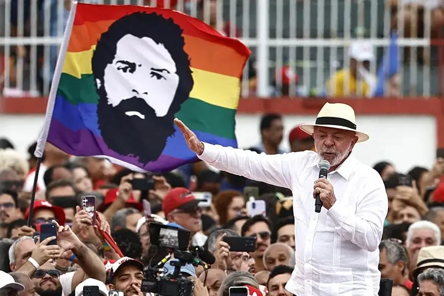

Actualidad verificada
Noticias
Política uruguaya, América Latina y el mundo con contexto, fuentes visibles y una mirada progresista que no altera los hechos.
Últimas publicaciones
El archivo comienza con la nueva etapa del sitio. Las próximas noticias aparecerán en orden cronológico.

Derechos humanos · Memoria
A 32 años del Filtro, la memoria vuelve a marchar
La movilización partirá el lunes 24 a las 18:00 desde el Obelisco bajo la consigna “Solidaridad sin transas, memoria y resistencia”.

Política internacional
Lula lleva su campaña a Río con educación frente a la línea dura de Flávio Bolsonaro
Dos actos simultáneos mostraron estrategias opuestas sobre seguridad pública en plena campaña brasileña.